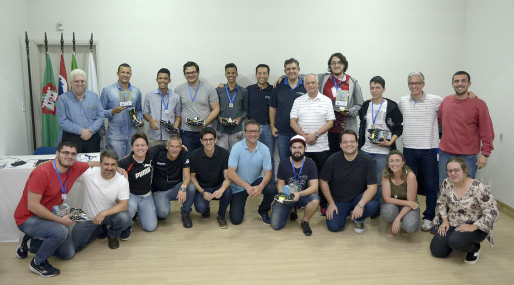

Felipe Passos
felipepassosc@gmail.com
(35)9 9761-9398
Desenvolvedor de Software || JavaScript || React || NodeJS
Jundiaí, São Paulo, Brasil
Experiências
Kroton 📚
Atualmente estou time Midgard da Kraton ( Cogna Educação ), a segunda maior empresa relacionada a educação do mundo. Referência mundial no setor da educação pelo valor de mercado e pela quantidade de alunos. Inovadora e líder no desenvolvimento e aplicação de tecnologias educacionais. Tecnologias que utilizamos no meu time são React, Redux, NodeJS. Usamos técnica como Pair programming, Code Review e usamos o Scaled Agile Framework.
Ambev 🍺
Participei de diversos projetos da Cervejaria Ambev, um dos meus primeiros projetos foi a criação de API'S em NodeJS, utilizando o framework Express. O desafio era criar API's que pegassem todos os dados que a empresa tinha no excel e mandasse tudo para o sistema ServiceNow.(em uma semana) Participei de diversos projetos que engloba desenvolvimento de processos de reembolso, api's em NodeJS e widgets usando Angular / Bootstrap.
Sem Parar 🚗
Recebi o desafio de fazer um widget com integração a um processo do fluig, para a empresa “Sem parar” com um pouco mais de uma semana, o sistema era para cadastro de novos colaboradores que usariam o sistema para anexar Foto 3x4, RG, CPF e comprovante de residência, usei template de email, para poder mandar email automaticamente aos administradores do processo, quando o fluxo percorria, até chegar na aprovação.
Sistema NPS Online 😁
Na Totvs Iv2 (consultoria da maior empresa de tecnologia do Brasil). Desenvolvi um software de Net Promoter Score, que basicamente é usado para medir o grau de satisfação dos nossos clientes. Fiz o layout com Bootstrap e usei a linguagem JavaScript (Ecma 6+), nesse projeto fiz consumo de API, uso de templates de email e criptografia.
Sistema de monitoramento dos Apps 🖥️
Desenvolvi um sistema para monitorar o uso dos aplicativos da empresa, como última atualização, quantos clientes estão usando os aplicativo atualmente. O Desenvolvimento foi feito com as frameworks React JS no Front End, Node JS de Back end e uso do Mongodb (banco de dados não relacional) e mySQL (banco de dados relacional) para fazer as pesquisas no banco.
Conquistas
Hackthon 🥇
Primeiro lugar em uma competição de programação, promovida pela prefeitura de jundiaí, com o apoio da Decathlon, CIJUN e ESEF. Nosso projeto foi o "Bora Correr", nesse projeto desenvolvemos um protótipo de aplicativo que ajuda as pessoas a saírem do sedentarismo, e eu tomei a frente do projeto desenvolvendo um sistema de gerenciamento do App(Usando React JS) e o site (Usando React JS e bootstrap). Um dos nossos prêmios foi a incubação do nossso projeto.
 Link da notíciaGithub
PROJETO Devhipster - Com o intuito de ajudar a comunidade e me desafiar como programador criei o Devhipster, que é uma plataforma de programação gratuita e open source que será usada pra postar cursos, lista de exercícios e vagas de emprego. Estou utilizando React, Styled Components, Axios, React-Bootstrap, entre outras tecnologias. link: Projeto Devhipster
PROJETO Bot discord - Usando o discord com meus amigos, tiver a ideia de criar um bot que entrasse na conversa sempre que forem ditas certas palavras como "instagram", "github", "youtube" e automaticamente o bot já manda minhas redes socias, e se mandar palavras como "Bom dia/boa tarde/ boa noite" ou "Olá, adalberto" ele também responderá com frases pré-definidas. Estou fazendo novas atualizações, como uso do tensorflow para usar inteligência artificial nesse projeto. Usei tecnologias como NodeJS, ExpressJS, Biblioteca do Discord, além da implementação do Tensorflow. link: Chatbot discord
PROJETO VIACEP - Iniciei um projeto ViaCep para poder usar o que aprendi no bootcamp Reactjs. Estou utilizando uma api do viacep pra pegar todos dados do cep e preencher os campos, utilizei axios, styled component, conceitos de propriedades, estado e ciclo de vida link: Projeto viaCep
BOT INSTAGRAM/ TINDER - Desenvolvi duas extensões para o google chrome, um bot para instagram, que as pessoas automaticamente e um bot para dar like no Tinder automaticamente, utilizando JavaScript. Bot do Instagram & Bot do Tinder
PROJETO RESUMO DE TEXTO - Desenvolvi um sistema (usando AngularJS/ Boostrap) para resumir textos em inglês, usando uma API do algorithmia. link: https://resumodetextos.web.app/
FACEBOOK CLONE - Desenvolvi um clone do Facebook utilazando React, Styled Components,conceitos de propriedades, estado e ciclo de vida link: Clone Facebook-react
Sistema Bora Poupar - Beta de um sistema(open source) para ajudar as pessoas à poupar e controlar melhor seus gastos (Usei: AngularJS + NodeJS + Bootstrap): Sistema Bora Poupar
Sistema Queijo-io - Beta de um sistema(open source) de chat em tempo real utilizando Socket.io (Usei: JavaScript + NodeJS + Socket.io + Bootstrap): Sistema Queijo.io
Sistema Rolê - Quer ir para algum role e não sabe qual? Apresento meu projeto favorito, "Rolê" tem como intuito mostrar todos os roles em jundiaí. Foi usado React, Bootstrap, NodeJS, ExpressJS e mongoDB
Sistema Pesquisar Repositórios GitHub - Sistema para pesquisar repositórios, Utilazando api do Github, usei React, Styled Components,conceitos de propriedades, estado e ciclo de vida Repositórios GitHub
Sistema de Eventos - Beta do site focado em eventos, logo mais disponível para o uso, usei React, Bootstrap ,conceitos de propriedades, estado e ciclo de vida, NodeJS, ExpressJS e mongodb
Estudo
Design Patterns no JavaScript – Factory
Inteligência Artificial comecei o estudo sobre IA usando o tensorflow com NodeJS. TensorFlow é uma biblioteca de código aberto para aprendizado de máquina aplicável a uma ampla variedade de tarefas. É um sistema para criação e treinamento de redes neurais para detectar e decifrar padrões e correlações, análogo à forma como humanos aprendem e raciocinam.
Factory Pattern é uma forma excelente de reduzir/remover complexidades na criação de objetos. Os exemplos deste artigo são simples, claro, mas não se deixe enganar. Factories podem ser extremamante complexos e tudo vai depender de quão complexo é a definição de seus objetos, podendo conter inclusive toda a parte de configuração.
React Hooks Com a utilização dos Hooks, possamos simplificar componentes complexos e tornar o código mais entendível e sustentável.
Arquitetura Flux é uma arquitetura usada pelo Facebook, que junto com o framework React é usado para construir aplicações web no client-side que trabalhem de forma reativa. Basicamente uma forma de fluxo unidirecional de dados entre eventos e ouvintes.
Redux é uma biblioteca JavaScript criada pelo Facebook para resolver um problema inerente de aplicações front-end conforme elas crescem em tamanho e complexidade. O Redux atende as necessidades de pelo menos um cenário comum em aplicações cliente, facilitando a comunicação entre componentes sem acoplá-los.
Testes automatizados em React e nodeJS para manter qualidade de software nos projetos, é preciso ter uma visão geral de qualidade no processo de desenvolvimento de software, incluindo testes automatizados, code review, integração contínua, monitoramento, entre outros tópicos.
Estudo de git e Github- GitHub é uma plataforma de hospedagem de código-fonte com controle de versão usando o Git. Ele permite que programadores, utilitários ou qualquer usuário cadastrado na plataforma contribuam em projetos privados e/ou Open Source de qualquer lugar do mundo. Afim de estudar, ajudar a comunidade e aprimorar meus conhecimentos comecei a postar meus projetos no github como mencionado no topo da página.
Formação acadêmica
Faculdade Impacta Tecnologia Bacharelado, Análise e Desenvolvimento de Sistema · (2019 - 2021)
Inglês
Atualmente faço EnglishLive, tenho conversas em grupo e aulas particulares. Me sinto seguro e compreendo conversas cotidianas, tenho boas habilidades comunicativas e a cada dia procuro mais expandir meu vocabulário.